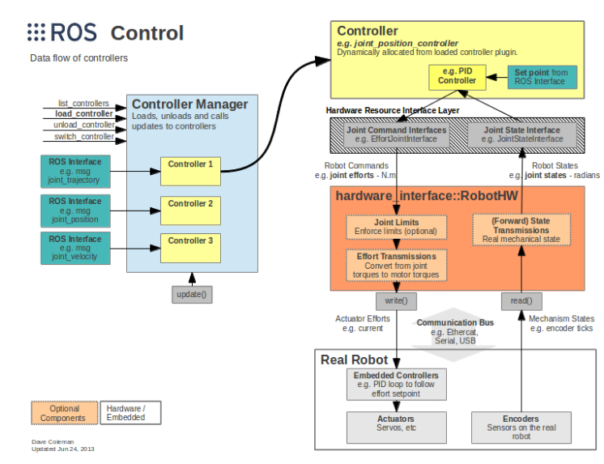
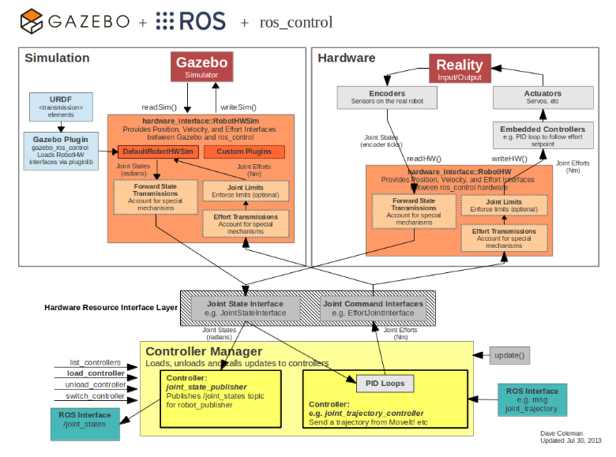

Ros control
Чтобы управлять нашим роботом из ros, для этого служит пакет ros control.
Ссылки: Tutorial: ROS Control и Gazebo (classic.gazebosim.org)
wiki.ros.org/ros_control
ROS Control
Пакеты ros control включают интерфейсы контроллера, диспетчеры контроллеров, передачи данных и аппаратные интерфейсы.

Пакеты ros_control принимают в качестве входных данных данные о совместном состоянии ( joint state data) от датчиков привода вашего робота (энкодеров) заданное значение на входе. В них используется общий механизм обратной связи по контуру управления, обычно ПИД-регулятор, для управления выходными данными, обычно усилием, передаваемым на ваши приводы. ros_control усложняется для физических механизмов, которые не имеют взаимно однозначных отображений совместных позиций, усилий и т.д., но эти сценарии учитываются с использованием передач.
Контроллеры:
Контроллеры содержатся в пакете ros_controllers. Для ros noetic ros_controllers содержит:
ackermann_steering_controller
diff_drive_controller
effort_controllers
force_torque_sensor_controller
forward_command_controller
gripper_action_controller
imu_sensor_controller
joint_state_controller
joint_trajectory_controller
position_controllers
velocity_controllers
- joint_state_controller - Публикует состояние всех ресурсов, зарегистрированных в интерфейсе hardware_interface::JointStateInterface, в топик типа sensor_msgs/JointState.
Состоит из joint_state_controller
- position_controllers - командует желаемой позицией аппаратному интерфейсу (HardwareInterface).
Содержит:
- joint_position_controller - Получает входные данные о местоположении и отправляет выходные данные о местоположении, просто передавая входные данные с помощью forward_command_controller.
- joint_group_position_controller - Устанавливает несколько положений соединения одновременно.
- velocity_controllers - задает желаемую скорость аппаратному интерфейсу.
- joint_position_controller - получает входные данные о местоположении и отправляет выходные данные о скорости, используя ПИД-регулятор.
- joint_velocity_controller - Получает входные данные о скорости и отправляет выходные данные о скорости, просто передавая входные данные с помощью forward_command_controller.
- joint_group_velocity_controller - устанавливает несколько скоростей соединения одновременно.
- effort_controllers - передает команду на требуемое усилие (силу/крутящий момент) в аппаратный интерфейс.
- joint_position_controller - получает входные данные о положении и отправляет выходные данные об усилии, используя ПИД-регулятор.
- joint_group_position_controller - Устанавливает несколько положений соединения одновременно.
- joint_velocity_controller - получает входные данные о скорости и отправляет выходные данные об усилии, используя ПИД-регулятор.
- joint_effort_controller - Получает входные данные об усилиях и отправляет выходные данные об усилиях, просто передавая входные данные с помощью forward_command_controller.
- join_group_effort_controller - настройка нескольких совместных действий одновременно.
- joint_trajectory_controllers - Дополнительная функциональность для построения полной траектории. Взгляните на исходный файл, чтобы понять, как joint_trajectory_controller связан с пространством имен position_controller, velocity_controller и т.д.
- position_controller
- velocity_controller
- effort_controller
- position_velocity_controller
- position_velocity_acceleration_controller
- diff_drive_controller
Из Как сделать робота на ROS своими руками. Часть 1: шасси и бортовая электроника: Этот тип контроллера отвечает непосредственно за движение двухколёсного робота. Как это работает? Мы даём контроллеру входные данные. Например, мы хотим, чтобы робот ехал с линейной скоростью в 1 м/c и угловой скоростью в 2 рад/c. Но не знаем, какие при этом должны быть скорости колёс. Контроллер берёт эти входные данные, а также значения текущих скоростей и положение робота, полученное с одометрии, обрабатывает всё это и на выходе отдаёт необходимые угловые скорости вращения колёс, чтобы наш робот двигался именно заданным образом.
В ROS движение робота конвенционально осуществляется через топики, которые обмениваются сообщениями типа geometry_msgs/Twist. Сообщение этого типа состоит из двух векторов linear и angular типа geometry_msgs/Vector3. Каждый такой вектор — трёхмерный. Вектор geometry_msgs/Vector3 linear описывает линейные скорости робота вдоль осей X, Y, Z в глобальной системе координат. Вектор geometry_msgs/Vector3 angular представляет скорость вращения робота вокруг осей X, Y, Z.
Наш двухколёсный дифференциальный привод обладает неголономным движением. Он контролируется только линейной скростью по оси X и угловой скоростью вокруг оси Z. Таким образом, наш вектор скорости linear будет всегда иметь нулевые линейные скорости по осям Y, Z и нулевые угловые скорости вокруг осей X и Y.
Опишем принцип работы контроллера. Мы отправляем желаемые векторы скорости робота в топик /cmd_vel. Контроллер анализирует полученные векторы, вычисляет необходимые скорости вращения правого и левого колеса и отправляет рассчитанные значения в топики моторов левого и правого колеса. Одновременно с этим контроллер считывает текущие углы поворота колёс и вычисляет текущую траекторию и одометрию робота. Сообщения об одометрии имеют тип nav_msgs/Odometry и публикуются в топик /odom.
Hardware Interfaces
Аппаратные интерфейсы используются ROS control совместно с одним из вышеперечисленных контроллеров ROS для отправки и приема команд на аппаратное обеспечение. Список доступных аппаратных интерфейсов (через диспетчер аппаратных ресурсов) на момент написания этой статьи. Если аппаратный интерфейс для вашего робота еще не существует, вы, конечно, можете создать свой собственный и не ограничиваться этим списком:
- Joint Command Interface - аппаратный интерфейс для поддержки управления массивом соединений. Обратите внимание, что эти команды могут иметь любое семантическое значение, если каждая из них может быть представлена одним символом double, они не обязательно являются командами усилия. Чтобы указать значение этой команды, обратитесь к производным классам.:
- Effort Joint Interface - для управления суставами, основанными на усилиях.
- Velocity Joint Interface - для управления скоростными соединениями.
- Position Joint Interface - для управления позиционными соединениями.
- Joint State Interfaces - Аппаратный интерфейс для поддержки считывания состояния массива именованных соединений, каждое из которых имеет определенное положение, скорость и усилие (силу или крутящий момент).
- Actuator State Interfaces - Аппаратный интерфейс для поддержки считывания состояния массива именованных исполнительных механизмов, каждый из которых имеет определенное положение, скорость и усилие (силу или крутящий момент).
- Actuator Command Interfaces
- Effort Actuator Interface
- Velocity Actuator Interface
- Position Actuator Interface
- PosVelJointInterface
- PosVelAccJointInterface
- Force-torque sensor Interface
- IMU sensor Interface
Установка пакетов ros control
sudo apt-get install ros-noetic-ros-control ros-noetic-ros-controllers
В этом руководстве мы настроим имитационные контроллеры для управления суставами вашего робота. Мы будем использовать пакеты ros_control, новый стандарт в ROS для интерфейсов контроллеров.
Имитация работы контроллеров робота в Gazebo может быть выполнена с помощью ros_control и простого адаптера плагинов Gazebo. Ниже представлен обзор взаимосвязи между моделированием, аппаратным обеспечением, контроллерами и передачами.:

В этом руководстве использованы многие концепции, описанные в предыдущих руководствах. Мы снова будем использовать RRBot, который был настроен в руководстве по использованию URDF в Gazebo, в качестве примера для плагинов, описанных здесь.
Убедитесь, что вы уже установили ros_control, ros_controllers и их зависимости.
Добавление <transmission> в URDF
Чтобы использовать ros_control в вашем роботе, вам необходимо добавить тег <transmission> в ваш URDF. Тег <transmission> используется для привязки приводов к шарнирам, точный формат XML приведен в спецификации <transmission>.
Шаблон блока transmission:
<transmission name="simple_trans">
<type>transmission_interface/SimpleTransmission</type>
<joint name="foo_joint">
<hardwareInterface>EffortJointInterface</hardwareInterface>
</joint>
<actuator name="foo_motor">
<mechanicalReduction>50</mechanicalReduction>
<hardwareInterface>EffortJointInterface</hardwareInterface>
</actuator>
</transmission>
- <transmission name=...>
Атрибут name определяет уникальное имя трансмиссии.
Внутренние теги:
- <type> тип transmission. Значение transmission_interface/SimpleTransmission в качестве интерфейса передачи, представляет собой простую редукторную передачу. Это именно то, что мы имеем между приводной частью (двигателем) и соединительной частью (выходным валом, к которому прикреплено звено), где редуктор определяет величину уменьшения.
- <joint name=""> name должен быть равен имени вашего сустава внутри блока robot.
Может быть несколько. Соединение, к которому подключена передача. Соединение определяется его атрибутом name и следующими подэлементами:
- <hardwareInterface> Указывает поддерживаемый аппаратный интерфейс.Указывает плагину gazebo_ros_control, какой аппаратный интерфейс загружать (position (позиция), velocity (скорость) или effort (усилие) interfaces). Значения: EffortJointInterface, JointStateInterface, VelocityJointInterface
- <actuator name="...">
Привод (мотор), к которому подключена трансмиссия. Привод определяется с помощью атрибута name и следующих подэлементов:
- <mechanicalReduction> (optional)
Указывает на механическое уменьшение нагрузки на шарнир/приводную коробку передач. Этот параметр
может потребоваться не для всех transmission.
- <hardwareInterface> (optional) (one or more occurrences)
Обратите внимание, что тег <hardwareInterface> следует указывать только в версиях
ROS до Indigo включительно. Правильное место для указания этого тега - в теге <joint>.
Остальные имена и теги в настоящее время игнорируются.
Плагины gazebo
В дополнение к тегам передачи в ваш URDF необходимо добавить плагин Gazebo, который фактически анализирует теги передачи и загружает соответствующие аппаратные интерфейсы и диспетчер контроллеров (могут подключать сообщения ROS и вызовы служб для вывода датчиков и ввода двигателя).
По умолчанию плагин gazebo_ros_control очень прост, хотя он также может быть расширен за счет дополнительной архитектуры плагина, позволяющей опытным пользователям создавать свои собственные аппаратные интерфейсы для роботов между ros_control и Gazebo.
По умолчанию код плагина (в конце urdf перед закрывающимся тегом robot):
<gazebo>
<plugin name="gazebo_ros_control" filename="libgazebo_ros_control.so">
<robotNamespace>/MYROBOT</robotNamespace>
</plugin>
</gazebo>
Тег <plugin> имеет дочерние и необязательные теги:
- <robotNamespace> Пространство имен ROS, которое будет использоваться для этого экземпляра плагина, по умолчанию имеет значение name в теге <robot в URDF/SDF.
- <controlPeriod> Период обновления контроллера (в секундах) по умолчанию равен периоду работы Gazebo
- <robotParam> Расположение robot_description (URDF) на сервере параметров по умолчанию равно "/robot_description"
- <robotSimType> Имя pluginlib пользовательского интерфейса robot sim, который будет использоваться.
По умолчанию, без тега <robotSimType>, gazebo_ros_control попытается получить всю информацию, необходимую для взаимодействия с контроллером на базе ros_control, из URDF.
Поведение gazebo_ros_control по умолчанию
По умолчанию, без тега <robotSimType>, gazebo_ros_control попытается получить всю информацию, необходимую для взаимодействия с контроллером на базе ros_control, из URDF. Этого достаточно для большинства случаев и хорошо, по крайней мере, для начала.
Поведение по умолчанию обеспечивает следующие аппаратные интерфейсы ros_control:
- hardware_interface::JointStateInterface
- hardware_interface::EffortJointInterface
- hardware_interface::VelocityJointInterface - не реализован в полной мере
Дополнительно: пользовательские плагины для моделирования gazebo_ros_control
Плагин gazebo_ros_control Gazebo также предоставляет интерфейс на основе pluginlib для реализации пользовательских интерфейсов между Gazebo и ros_control для моделирования более сложных механизмов (нелинейных пружин, связей и т.д.).
Эти плагины должны наследовать gazebo_ros_control::RobotHWSim, который реализует имитируемый аппаратный интерфейс ros_control::RobotHW. RobotHWSim предоставляет доступ на уровне API для чтения и управления совместными свойствами в Gazebo simulator.
Соответствующий подкласс RobotHWSim указан в модели URDF и загружается при загрузке модели робота. Например, следующий XML-файл загрузит плагин по умолчанию (то же поведение, что и при отсутствии тега <robotSimType>).:
<gazebo>
<plugin name="gazebo_ros_control" filename="libgazebo_ros_control.so">
<robotNamespace>/MYROBOT</robotNamespace>
<robotSimType>gazebo_ros_control/DefaultRobotHWSim</robotSimType>
</plugin>
</gazebo>
Конфигурационный файл yaml
Помимо файла URDF, мы должны предоставить файл конфигурации, который загружает значения коэффициента усиления и параметры (настройки) контроллеров на сервер параметров через файл.launch. Файл конфигурации хранится в отдельной подпапке с именем config в папке нашего проекта.
Пример конфигурационного файла для робота RRbot:
rrbot:
# Publish all joint states -----------------------------------
joint_state_controller:
type: joint_state_controller/JointStateController
publish_rate: 50
# Position Controllers ---------------------------------------
joint1_position_controller:
type: effort_controllers/JointPositionController
joint: joint1
pid: {p: 100.0, i: 0.01, d: 10.0}
joint2_position_controller:
type: effort_controllers/JointPositionController
joint: joint2
pid: {p: 100.0, i: 0.01, d: 10.0}
Файл.launch для запуска RRbot и этих контроллеров из конфигурационного файла.yaml:
<launch>
<!-- Load joint controller configurations from YAML file to parameter server -->
<rosparam file="$(find rrbot_control)/config/rrbot_control.yaml" command="load"/>
<!-- load the controllers -->
<node name="controller_spawner" pkg="controller_manager" type="spawner" respawn="false"
output="screen" ns="/rrbot" args="joint1_position_controller joint2_position_controller joint_state_controller"/>
<!-- convert joint states to TF transforms for rviz, etc -->
<node name="robot_state_publisher" pkg="robot_state_publisher" type="robot_state_publisher"
respawn="false" output="screen">
<remap from="/joint_states" to="/rrbot/joint_states" />
</node>
</launch>
Первая строка, "rosparam", загружает настройки контроллера на сервер параметров путем загрузки файла конфигурации yaml.
Узел controller_spawner запускает два контроллера совместного позиционирования для RRBot, запуская скрипт на python, который выполняет сервисный вызов для диспетчера контроллеров ros_control. Сервисные вызовы сообщают диспетчеру контроллеров, какие контроллеры вам нужны. Он также загружает третий контроллер, который публикует общие состояния всех соединений с помощью hardware_interfaces и объявляет тему в /joint_states. Spawner - это просто вспомогательный скрипт для использования с roslaunch.
В последней строке запускается узел robot_state_publisher, который просто прослушивает сообщения /join_states от join_state_controller, а затем публикует преобразования в /tf. Это позволяет вам видеть вашего моделируемого робота в Rviz, а также выполнять другие задачи.
# Контроллер состояния суставов, который публикует состояние всех суставов в роботе
joint_state_controller:
type: "joint_state_controller/JointStateController" # Тип контроллера, отвечающий за сбор и публикацию данных о состоянии суставов
publish_rate: 50 # Частота публикации данных о состоянии суставов в герцах
# Контроллер позиции для управления камерой
camera_controller:
type: "position_controllers/JointPositionController" # Тип контроллера, отвечающий за управление позицией сустава
joint: camera_joint # Сустав, которым управляет данный контроллер
# Контроллеры скорости для управления колёсами
# Каждый контроллер управляет одним колесом
# Контроллер для переднего левого колеса
front_left_wheel_controller:
type: "velocity_controllers/JointVelocityController" # Контроллер управляет скоростью вращения сустава
joint: front_left_wheel_joint # Сустав переднего левого колеса
# Контроллер для переднего правого колеса
front_right_wheel_controller:
type: "velocity_controllers/JointVelocityController"
joint: front_right_wheel_joint # Сустав переднего правого колеса
# Контроллер для заднего левого колеса
back_left_wheel_controller:
type: "velocity_controllers/JointVelocityController"
joint: back_left_wheel_joint # Сустав заднего левого колеса
# Контроллер для заднего правого колеса
back_right_wheel_controller:
type: "velocity_controllers/JointVelocityController"
joint: back_right_wheel_joint # Сустав заднего правого колеса
Здесь после joint: пишем имя сустава, для которого назначен контроллер.